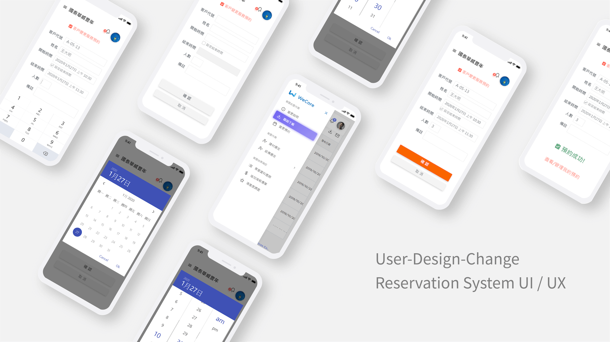
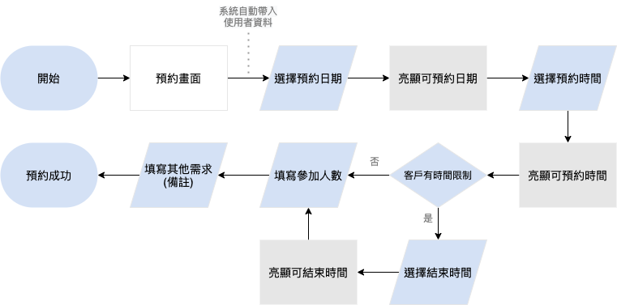

Description
2020年
此Mockup作品以Adobe XD進行UI設計，協助公司進行某建設公司的預售屋客變預約系統的提案而製作。
負責項目
使用者流程設計
UI 設計
Mockup 製作
使用者流程圖 (User Flow)
進入預約畫面後，所有動作都將在「預約畫面」這個頁面中完成。
使用者將會開始選擇預約時間、結束時間的功能。
最後使用者選擇參加人數，以方便建設公司安排適當的場地和設備，並標注是否有其他需求。

選擇「開始時間」畫面
選擇「開始時間」前畫面

選擇「日期」

選擇「時間」

結束時間設定、選填人數設定畫面
系統預設帶入「客戶代號」與「姓名」資訊。若該公司的客戶有其他行程安排或討論時間限制，使用者可以選擇「結束時間」，方便該公司的接待人員掌握討論時間。
讓使用者填寫參加人數，則是方便讓該公司的接待人員預先掌握狀況，做出適切的服務安排。
開始時間設定完成

填寫預約人數

填寫完必要資訊後，即開放「確認按鈕」

預約成功畫面
在使用者選填備註(是否有其他需求)之後，則會顯示最後「預約成功」的提醒。